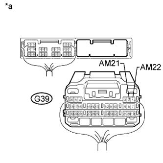

DTC B2285 Steering Lock Position Signal Circuit Malfunction |
| DTC Code | DTC Detection Condition | Trouble Area | DTC Output Confirmation Operation |
| B2285 | Mismatch between the steering lock position signal from the direct line sent by the steering lock ECU and the steering lock position signal sent via LIN communication (1-trip detection logic*). |
| Disconnect the cable from the negative (-) battery terminal, wait 30 seconds and reconnect the cable to the negative (-) battery terminal. Wait another 40 seconds or more with the engine switch off (steering locked), and then turn the engine switch on (ACC) (steering unlocked) and wait 40 seconds or more. |
| Vehicle Condition when Malfunction Detected | Fail-safe Function when Malfunction Detected |
| The engine cannot be started. | An engine start command is not output. |
| DTC | Data List Item | Active Test Item |
| B2285 | Power Source Control
Entry&Start
| - |
| 1.CHECK FOR DTC (LIN COMMUNICATION SYSTEM) |
Check for DTCs (Click here).
|
| ||||
| OK | |
| 2.READ VALUE USING INTELLIGENT TESTER (STEERING UNLOCK SWITCH) |
Connect the intelligent tester to the DLC3.
Turn the engine switch on (IG).
Turn the intelligent tester on.
Enter the following menus: Body / Power Source Control / Data List.
According to the display on the intelligent tester, read the Data List.
| Tester Display | Measurement Item/Range | Normal Condition | Diagnostic Note |
| Steering Unlock Switch | State of steering unlock sensor signal output from steering lock actuator assembly/ON or OFF | ON: Steering unlocked*1 OFF: Steering locked*2 |
|
| Result | Proceed to |
| Data List item does not change | A |
| Data List item changes | B |
|
| ||||
| A | |
| 3.CHECK HARNESS AND CONNECTOR (BATTERY - POWER MANAGEMENT CONTROL ECU) |
|  |
Disconnect the G39 power management control ECU connector.
Measure the voltage according to the value(s) in the table below.
| Tester Connection | Condition | Specified Condition |
| G39-2 (AM21) - Body ground | Always | 9.5 to 14 V |
| G39-1 (AM22) - Body ground |
| *a | Rear view of wire harness connector (to Power Management Control ECU) |
|
| ||||
| OK | |
| 4.CHECK HARNESS AND CONNECTOR (POWER MANAGEMENT CONTROL ECU - BODY GROUND) |
Disconnect the G39 power management control ECU connector.
 |
Measure the resistance according to the value(s) in the table below.
| Tester Connection | Condition | Specified Condition |
| G39-6 (GND) - Body ground | Always | Below 1 Ω |
| G39-5 (GND2) - Body ground |
| *a | Rear view of wire harness connector (to Power Management Control ECU) |
|
| ||||
| OK | |
| 5.INSPECT STEERING LOCK ACTUATOR ASSEMBLY (STEERING LOCK ECU) |
Measure the resistance according to the value(s) in the table below.
| Tester Connection | Condition | Specified Condition | |
| Positive (+) tester probe → G23-4 (SLP1) Negative (-) tester probe → Body ground | Steering locked*1 | 10 kΩ or higher | |
| Positive (+) tester probe → G23-4 (SLP1) Negative (-) tester probe → Body ground | Steering unlocked*2 | Below 1 Ω | |
| *a | Component with harness connected (Steering Lock ECU) |
|
| ||||
| OK | |
| 6.CHECK HARNESS AND CONNECTOR (POWER MANAGEMENT CONTROL ECU - STEERING LOCK ECU) |
Disconnect the G39 power management control ECU connector.
Disconnect the G23 steering lock ECU connector.
Measure the resistance according to the value(s) in the table below.
| Tester Connection | Condition | Specified Condition |
| G39-3 (SLP) - G23-4 (SLP1) | Always | Below 1 Ω |
| G39-3 (SLP) or G23-4 (SLP1) - Body ground | Always | 10 kΩ or higher |
|
| ||||
| OK | ||
| ||